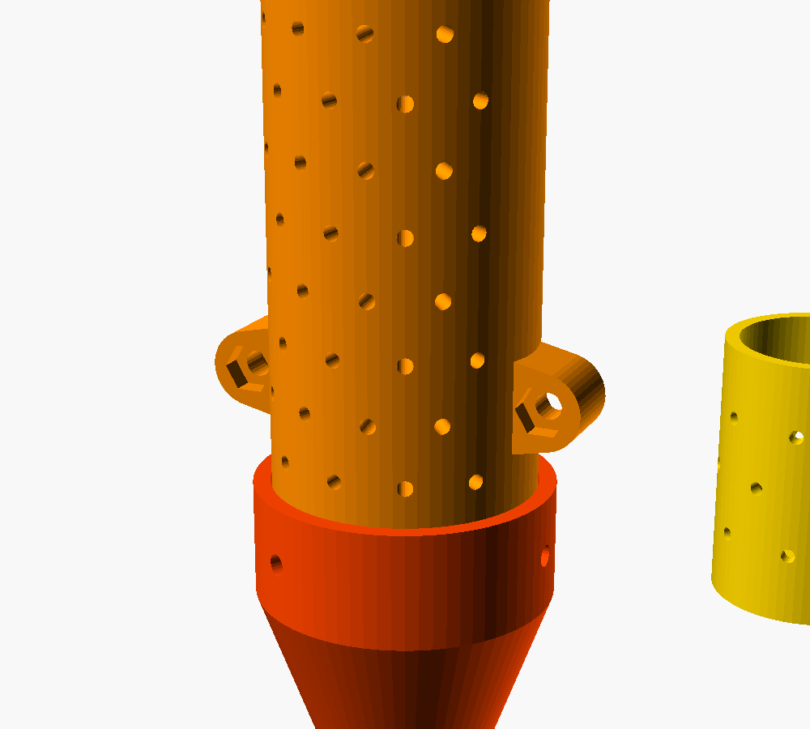

The prototype
From a CAD sketch to a working probe in one summer
I built the working prototype in July and August 2026 at home. I modelled every printed part in Autodesk Fusion 360, prepared them in OrcaSlicer and printed them on my Creality K1C.
What's inside
- Body1 m aluminium tube
- Printed partsPerforated chamber, nose cone, electronics box (PLA)
- SensorMAX9814 microphone with automatic gain
- BrainESP32, 12-bit ADC
- Power & dataUSB
- Cost of parts1,000–1,200 RUB (≈ $15)
First measurements
Signal amplitude in ADC units, measured with my first firmware version. Even light knocks stand out 3–7 times above the quiet background.
This proves the probe hears small mechanical impacts. Detecting real insects in grain is the next stage of testing.
